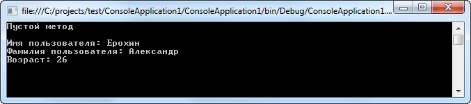
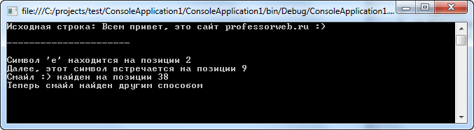

| Тема 1 Перегрузка методов. | ||
| Назад | ||
|
В C# допускается совместное использование одного и того же имени двумя или более методами одного и того же класса, при условии, что их параметры объявляются по-разному. В этом случае говорят, что методы перегружаются , а сам процесс называется перегрузкой методов. Перегрузка методов относится к одному из способов реализации полиморфизма в C#.В общем, для перегрузки метода достаточно объявить разные его варианты, а об остальном позаботится компилятор . Но при этом необходимо соблюсти следующее важное условие: тип или число параметров у каждого метода должны быть разными.Совершенно недостаточно, чтобы два метода отличались только типами возвращаемых значений. Они должны также отличаться типами или числом своих параметров. (Во всяком случае, типы возвращаемых значений дают недостаточно сведений компилятору C#, чтобы решить, какой именно метод следует использовать.)Разумеется, перегружаемые методы могут отличаться и типами возвращаемых значений. Когда вызывается перегружаемый метод, то выполняется тот его вариант, параметры которого соответствуют (по типу и числу) передаваемым аргументам. Перегрузка операций Перегрузка операций в C# является способом объявления семантики новых операций, которые обозначаются принятыми в C# символами операций. Перегрузка операций строится на основе общедоступных ( public ) статических (вызываемых от имени класса) функций-членов с использованием ключевого слова operator. Не все операции множества могут быть переопределены (перегружены) подобным образом. Некоторые операции могут перегружаться с ограничениями. В таблице приводится соответствующая информация относительно перегрузки различных категорий символов операций.
Давайте рассмотрим пример использования перегрузки методов: using System; using System.Collections.Generic; using System.Linq; using System.Text; namespace ConsoleApplication1 { class UserInfo { // Перегружаем метод ui public void ui() { Console.WriteLine("Пустой метод\n"); } public void ui(string Name) { Console.WriteLine("Имя пользователя: {0}",Name); } public void ui(string Name, string Family) { Console.WriteLine("Имя пользователя: {0}\nФамилия пользователя: {1}",Name,Family); } public void ui(string Name, string Family, byte Age) { Console.WriteLine("Имя пользователя: {0}\nФамилия пользователя: {1}\nВозраст: {2}", Name, Family, Age); } } class Program { static void Main(string[] args) { UserInfo user1 = new UserInfo(); // Разные реализации вызова перегружаемого метода user1.ui(); user1.ui("Ерохин", "Александр", 26); Console.ReadLine(); } } } Использование перегруженного метода C#  Как видите метод ui перегружается три раза. Модификаторы параметров ref и out Модификаторы параметров ref и out также учитываются, когда принимается решение о перегрузке метода.(Модификатор ref предназначен для указания того, что параметр метода должен передаваться по ссылке а не по значению). Модификатор параметра out используется, если необходимо выполнение двух условий:
Несмотря на то что модификаторы параметров ref и out учитываются, когда принимается решение о перегрузке метода, отличие между ними не столь существенно. Давайте добавим еще одну перегрузку в вышеуказанный пример: // Используем модификатор параметров public void ui(string Name, string Family, ref byte Age) { } Перегрузка методов поддерживает свойство полиморфизма, поскольку именно таким способом в C# реализуется главный принцип полиморфизма: один интерфейс — множество методов. Для того чтобы стало понятнее, как это делается, обратимся к конкретному примеру. В языках программирования, не поддерживающих перегрузку методов, каждому методу должно быть присвоено уникальное имя. Но в программировании зачастую возникает потребность реализовать по сути один и тот же метод для обработки разных типов данных. Допустим, что требуется функция, определяющая абсолютное значение. В языках, не поддерживающих перегрузку методов, обычно приходится создавать три или более вариантов такой функции с несколько отличающимися, но все же разными именами. Например, в С функция abs() возвращает абсолютное значение целого числа, функция labs() — абсолютное значение длинного целого числа, а функция fabs () — абсолютное значение числа с плавающей точкой обычной (одинарной) точности. В С перегрузка не поддерживается, и поэтому у каждой функции должно быть свое, особое имя, несмотря на то, что все упомянутые выше функции, по существу, делают одно и то же — определяют абсолютное значение. Но это принципиально усложняет положение, поскольку приходится помнить имена всех трех функций, хотя они реализованы по одному и тому же основному принципу. Подобные затруднения в C# не возникают, поскольку каждому методу, определяющему абсолютное значение, может быть присвоено одно и то же имя. И действительно, в состав библиотеки классов для среды .NET Framework входит метод Abs(), который перегружается в классе System.Math для обработки данных разных числовых типов. Компилятор C# сам определяет, какой именно вариант метода Abs() следует вызывать, исходя из типа передаваемого аргумента. В C# определено понятие сигнатуры, обозначающее имя метода и список его параметров; Применительно к перегрузке это понятие означает, что в одном классе не должно существовать двух методов с одной и той же сигнатурой. Следует подчеркнуть, что в сигнатуру не входит тип возвращаемого значения, поскольку он не учитывается, когда компилятор C# принимает решение о перегрузке метода. В сигнатуру не входит также модификатор params. Чтобы закрепить понятие перегрузки методов, давайте рассмотрим перегрузку встроенного метода IndexOf класса String пространства имен System: Метод
String.IndexOf Синтаксис : public int IndexOf (string value, int startIndex, int count); Параметры Возвращаемое значение Int32 - Отсчитываемая от нуля позиция индекса параметра value с начала текущего экземпляра, если строка найдена. Значение –1, если строка не найдена. Если значение параметра value равно Empty, возвращаемым значением является startIndex.
using System;
using System.Collections.Generic;
using System.Linq;
using System.Text;
namespace ConsoleApplication1
{
class Program
{
static void Main(string[] args)
{
string s = "Всем привет, это сайт professorweb.ru :)";
char ch = 'е';
string smile = ":)";
Console.WriteLine("Исходная строка: {0}\n\n----------------------\n",s);
// Первая перегрузка
if (s.IndexOf(ch) != -1)
Console.WriteLine("Символ '{0}' находится на позиции {1}",ch,s.IndexOf(ch));
// Вторая перегрузка
if (s.IndexOf(ch, s.IndexOf(ch)+1) != -1)
Console.WriteLine("Далее, этот символ встречается на позиции {0}", s.IndexOf(ch, s.IndexOf(ch) + 1));
// Третья перегрузка
if (s.IndexOf(smile, 0, s.Length) != -1)
Console.WriteLine("Смайл {0} найден на позиции {1}", smile, s.IndexOf(smile, 0, s.Length));
// Четвертая перегрузка
if (s.IndexOf(smile, StringComparison.Ordinal) != -1)
Console.WriteLine("Теперь смайл найден другим способом");
Console.ReadLine();
}
}
}
Перегрузки IndexOf C#  В данном примере используется только часть доступных перегрузок метода IndexOf, если бы C# не поддерживал перегрузки, то пришлось бы присваивать каждому методу свое имя, что конечно же очень неудобно. В данном случае метод IndexOf реализует несколько перегрузок, для поиска символов и подстрок в исходной строке. |
||
| Конспект подготовлен Бакулиным А. М. 2022 год. | ||